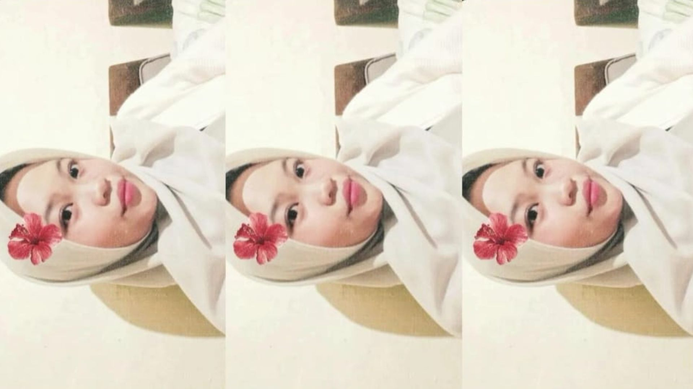

Halo sasa
Aku mau ngomong sesuatu nih
Aku mau ngomong sesuatu nih

Awal kita ketemu itu bener-bener nggak nyangka 😅. Waktu itu kita dibagi kelompok, dan jujur aja… aku nggak nyangka bakal sekelompok sama kamu . Awalnya kita nggak kenal, cuma ngobrol seperlunya aja, kayak orang nungguin angkot lewat 🚐. Tapi entah kenapa, makin lama kerja kelompok, aku jadi makin tau kamu tuh orangnya gimana . Dari cara kamu ngomong, cara kamu ngerjain tugas , sampai cara kamu ketawa—semua itu bikin aku nyaman banget ❤️. Yang paling lucu sih waktu aku nitip pensil warna ke kamu . Rasanya kayak hal sepele banget, tapi dari situ aku malah jadi sering nyari-nyari alasan biar ngobrol lagi sama kamu . Terus ada momen yang nggak akan aku lupain: waktu kita kerja kelompok nyari supplier bareng . Kita berdua mencar dari yang lain, cuma berdua jalan sambil ngobrol ngalor-ngidul . Momen itu bikin aku ngerasa deket banget sama kamu, kayak dunia cuma ada kita berdua aja 💑. Mungkin ini kedengeran nya aneh , tapi aku serius sama perasaan ini . Aku nggak cuma iseng atau seneng sementara, tapi bener-bener pengen kenal kamu lebih dalam . Semoga ke depannya kita nggak cuma jadi teman satu kelompok, tapi bisa jadi pasangan yang serius 💖, saling dukung, saling ngerti, dan saling jaga ✨. Jadi… ya, ini mungkin tiba-tiba , tapi aku mau bilang: aku suka sama kamu ❤️.